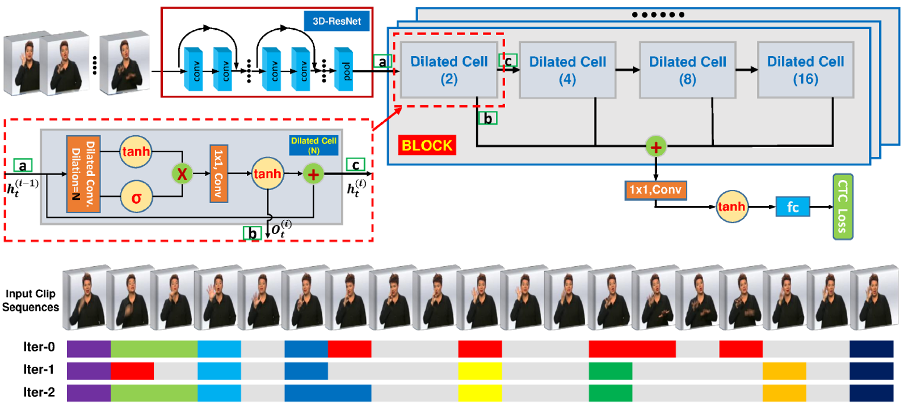

Welcome to Junfu Pu's homepage!
Home
News
Research
Projects
Experience
Teaching
Link
Junfu Pu (蒲俊福)
Dept. Electronic Engineering and Information Science (EEIS)
University of Science and Technology of China (USTC)
Email: pjh@mail.ustc.edu.cn jevin754@outlook.com
Phone: +86-130-6333-8237
Office: West Campus of USTC, Huangshan Road, Hefei, Anhui, 230026, China
CV [English] [Chinese]. View on Github.
Brief
I am a Ph.D candidate in Laboratory of Multimedia Computing and Communication (MCC). I received the B.E. degree in EE from University of Science and Technology of China (USTC) in 2015. My research interests include image processing and computer vision. Specifically, I focus on Chinese sign language recognition (SLR) with the supervision of Prof. Wengang Zhou and Prof. Houqiang Li. I was a research intern
at Satoh Lab, National Institute of Informatics (NII) from Aug. 2016 to Nov. 2016. My research project at NII is video event retrieval with the supervision of Prof. Shin'ichi Satoh
Apr. 2018: One paper is accepted to IJCAI-ECAI 2018.
Apr. 2017: One paper is accepted to ICIP 2017.
Oct. 2016: Awarded National Scholarship.
Jun. 2016: Application for Internship Program is accepted by NII.
Jun. 2016: One paper is accepted to PCM 2016.
Mar. 2016: One paper (co-author) is accepted to ICME 2016.
Sep. 2015: One paper is accepted to MMM 2016.

Dilated Convolutional Network with Iterative Optimization for Coutinuous Sign Language Recognition
Junfu Pu1, Wengang Zhou1, and Houqiang Li1
International Joint Conference on Artificial Intelligence (IJCAI), 2018. (Accepted)
[Paper (To Appear)]
[BibTex]
[Project]
1. University of Science and Technology of China (USTC), China
Deep Supervised Quantization by Self-Organizing Map
Min Wang1, Wengang Zhou1, Qi Tian2, Junfu Pu1, and Houqiang Li1
International Conference on Multimedia (MM), 2017.
[Paper]
[BibTex]
[Project]
1. University of Science and Technology of China (USTC), China
2. University of Texas at San Antonio (UTSA), USA
Energy Based Retrieval in Video with Temporal Match Kernel
Junfu Pu1, Yusuke Matsui2, Fan Yang3,2, and Shin'ichi Satoh2,3
International Conference on Image Processing (ICIP), 2017.
[Paper]
[BibTex]
[Slice]
[Project]
1. University of Science and Technology of China (USTC), China
2. National Institute of Informatics (NII), Japan
3. The University of Tokyo (U-Tokyo), Japan
Chinese Sign Language Recognition with Adaptive HMM
Jihai Zhang1, Wengang Zhou1, Chao Xie1, Junfu Pu1, and Houqiang Li1
International Conference on Multimedia and Expo (ICME), 2016.
[Paper]
[BibTex]
[Project]
1. University of Science and Technology of China (USTC), China
DeepCraft: Fall in Love with the World
Yunfeng Wang1, Ke Sun1, Yue Lv, and Junfu Pu1
Project for HACKxSJTU, 2017.
[Project]
[Code]
1. University of Science and Technology of China (USTC), China
Experience [Top]
- 2015.06 - present, Ph.D candidate, Dept. EEIS, University of Science and Technology of China.
- 2016.08-2016.11, Research Intern at National Institute of Informatics (NII). Advisor: Prof. Satoh.
- 2011.09-2015.06, B.E, School for the Gifted Young (SCGY), University of Science and Technology of China.
Teaching Assistant [Top]
- Spring 2018, Digital Image Analysis, USTC. [Course Homepage]
- Autumn 2017, Digital Image Analysis, USTC.

© Junfu Pu 2018 Last updated on Apr. 13, 2018